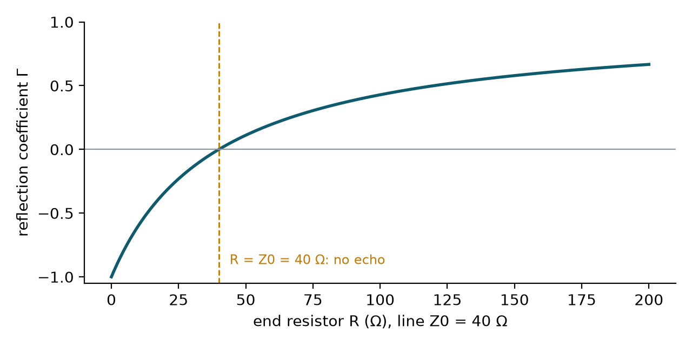
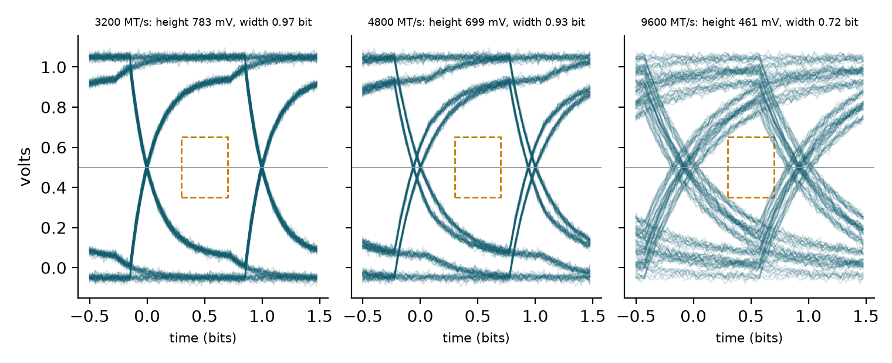
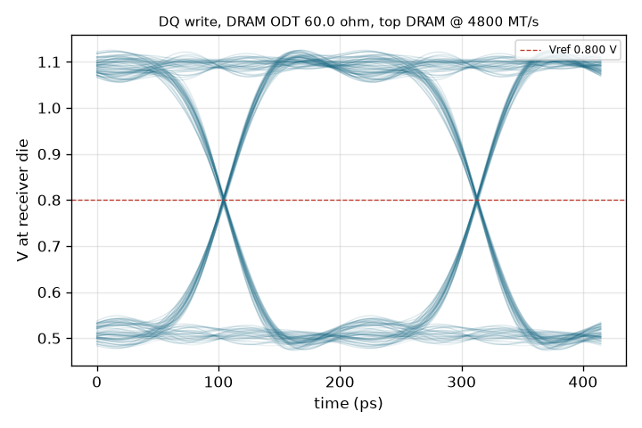
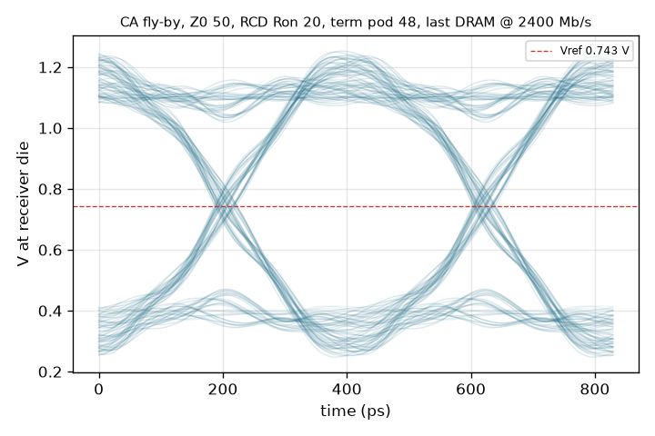

Chapter 12: Signals: When a Wire Stops Being Just a Wire¶
At 4800 million transfers per second, each bit lasts about 0.2 nanoseconds. In that time a signal travels only about 3 cm along the board. Wires start to behave like water pipes that echo. This chapter explains why, using the 32 GB module of Chapter 11 as the example: the characteristic impedance of a trace, the echoes that a mismatched end produces, the eye diagram that engineers use to judge whether a link will work, and the fly-by command bus that visits five chips in a row and the study that chose its termination.
12.1 Why wires behave differently at speed¶
At 4800 MT/s one bit lasts \(1000/4800 = 0.208\) ns. A signal on a printed circuit board moves at roughly half the speed of light, about 15 cm per nanosecond, so in one bit time it covers about 3 cm. The DRAM package of this project is 7.5 × 11 mm, so a bit is only a few chip-widths long, and shorter than many of the wires carrying it. When wires are long compared with the signal's rise time, you can no longer treat a wire as one electrical point. The signal travels along it as a wave, and what happens at the far end matters.
12.2 Impedance and echoes¶
Every fast wire has a characteristic impedance \(Z_0\): how hard it "pushes back" on a signal. The traces of the module are designed at 40 Ω by choosing the trace width and the distance to the copper plane underneath. If the end of the wire does not match \(Z_0\), part of the signal reflects. The fraction is the reflection coefficient
where \(R\) is the resistance at the end. A termination resistor equal to \(Z_0\) absorbs the signal completely, with no echo.
Flick a rope tied to a wall and the wave bounces back. Tie it to an identical rope that runs on forever and the wave just keeps going. A matched termination is the "rope that runs on forever".
Example 12.1: Echoes from different line ends
The line has \(Z_0 = 40\ \Omega\). Evaluate \(\Gamma\) for five line ends.
| End | R | \(\Gamma = (R-40)/(R+40)\) | What happens |
|---|---|---|---|
| Short circuit | 0 Ω | \(-40/40 = -1\) | Echo of full size, inverted |
| 20 Ω resistor | 20 Ω | \(-20/60 = -0.33\) | Echo a third of the size, inverted |
| Matched | 40 Ω | \(0\) | No echo |
| 80 Ω resistor | 80 Ω | \(40/120 = +0.33\) | Echo a third of the size, same polarity |
| Open end | very large | \(\to +1\) | Echo of full size, same polarity |
A 1 V step sent into the 20 Ω end therefore returns a 0.33 V echo of opposite sign; into the open end it returns 1 V of the same sign, which adds to the incoming step and can overshoot the voltage limit of the receiver.

12.3 The eye diagram¶
Take a long random stream of bits, cut it into two-bit slices and draw all the slices on top of each other. The empty diamond in the middle is the eye. The receiver decides 0 or 1 in the middle of it, so it needs the eye to be tall (voltage margin) and wide (timing margin).
Three effects close the eye:
- Faster signalling gives less time per bit, so the wire's slowness smears one bit into the next.
- Echoes from mismatched ends add ghost copies of the signal.
- Noise blurs everything.
The course's demonstration made this visible with a simple model: a pseudo-random bit sequence (PRBS7, which repeats every 127 bits) passed through a first-order low-pass filter with a time constant of 0.06 ns, plus a single echo 0.27 ns later and Gaussian noise. A mask of 0.3 V in height and 0.4 bit in width, centred in the eye, decides pass or fail. Figure 12.2 recreates it at three speeds with a 10 per cent echo and 12 mV of noise.

The eye shrinks steadily with speed: from 783 mV high and 0.97 bit wide at 3200 MT/s to 461 mV and 0.72 bit at 9600 MT/s. All three pass the mask of this simple model, but the margin at 9600 is far thinner, and real channels add more impairments than this toy model.
The real project eye is shown in Figure 12.3: the module's data path simulated in ngspice for a write to the top DRAM at 4800 MT/s with on-die termination of 60 Ω. The eye is wide open.

What the reference level does
The dashed line in Figure 12.3 is \(V_{ref}\), 0.800 V, the level the receiver compares the incoming signal against to decide 0 or 1. The signal swings between about 0.5 V and 1.1 V, so the reference sits near the middle of the eye, which is where the crossing points of the traces lie.
12.4 The command bus: a fly-by with five stops¶
Data wires run point to point, one wire to one chip. But each command must reach many chips. The RCD drives one long wire that visits five chips like bus stops. This is the fly-by topology of Section 5.5. Each stop adds load and an echo, and the signal reaches the last chip later than the first. The chips cope with the arrival delay through a calibration called write levelling. The echoes must be tamed by choosing the wire impedance, the driver strength and the termination.
The course's demonstration used a simple model of this: a loaded line. Every chip adds capacitance, which lowers the effective impedance of the wire, and slows the signal. With a signal delay of 6.62 ps per millimetre of unloaded wire, 0.132 pF of wire capacitance per millimetre, 1.33 pF per chip and a first chip 15 mm from the RCD, the slowing factor is \(k = \sqrt{1 + C_{load}/(C' \cdot p)}\) for chip pitch \(p\), the loaded impedance is \(50/k\) ohms, and the arrival time at chip \(i\) (counting from 0) is \((15 + i\,p)\times 6.62 \times k\) ps.
Example 12.2: Fly-by arrival times
- Pitch 11.5 mm (the project's chip spacing): \(C'p = 0.132 \times 11.5 = 1.518\) pF, so \(k = \sqrt{1 + 1.33/1.518} = 1.37\). Loaded impedance \(= 50/1.37 = 36.5\ \Omega\).
- Arrival times: chip 0 at \(15 \times 6.62 \times 1.37 = 136\) ps; then 240, 345, 449 and 553 ps for chips 1 to 4.
- The last chip hears the command \(553 - 136 = 417\) ps after the first. That is nearly two bit times at 4800 MT/s (0.208 ns), which is why write levelling is needed.
| Pitch (mm) | \(k\) | Loaded impedance (Ω) | First chip (ps) | Last chip (ps) | Spread (ps) |
|---|---|---|---|---|---|
| 8.0 | 1.50 | 33.3 | 149 | 468 | 318 |
| 11.5 | 1.37 | 36.5 | 136 | 553 | 417 |
| 16.0 | 1.28 | 39.2 | 127 | 668 | 541 |
Wider spacing lowers the loading (the impedance rises towards 50 Ω) but makes the spread larger.
The project simulated 48 combinations of wire impedance, driver strength and termination (and 27 alternative ones). Ten passed. The chosen combination is a 50 Ω wire, a 20 Ω driver and a 48 Ω termination inside the last chip. The result: an eye about 0.6 bit wide, with an overshoot of 227 mV against a limit of 250 mV. That margin is thin, which is an honest thing to note: the design passes, but with little to spare.

12.5 Summary¶
- At 4800 MT/s a bit lasts 0.208 ns and a signal moves about 3 cm in that time, so wires behave as transmission lines with a characteristic impedance (40 Ω for the module's traces).
- A mismatch reflects \(\Gamma = (R - Z_0)/(R + Z_0)\) of the signal; a termination equal to \(Z_0\) removes the echo.
- The eye diagram shows voltage and timing margin; speed, echoes and noise all close it.
- The command bus is a fly-by that loads the wire, delays the signal differently at each chip (write levelling compensates) and needs a termination chosen by simulation. The project chose a 50 Ω wire, 20 Ω driver and 48 Ω termination, with thin margins.
12.6 Exercises¶
Exercise 12.1. A 40 Ω line ends in a 60 Ω resistor. Find \(\Gamma\) and the size and sign of the echo for a 1.1 V step.
Answer
\(\Gamma = (60-40)/(60+40) = 0.2\). The echo is \(+0.22\) V, the same polarity as the step.
Exercise 12.2. How far does a signal travel in one bit time at 6400 MT/s, if it moves at 15 cm per nanosecond?
Answer
One bit lasts \(1000/6400 = 0.156\) ns, so the signal travels \(0.156 \times 15 = 2.3\) cm.
Exercise 12.3. At 4800 MT/s the fly-by spread is 417 ps with 11.5 mm spacing. Express this in bit times of the data signal and in clock cycles of the 2400 MHz clock.
Answer
A bit lasts 208 ps, so \(417/208 \approx 2.0\) bit times. A clock cycle lasts 417 ps, so the spread is almost exactly one clock cycle. Write levelling aligns the data to each chip's clock arrival.
Exercise 12.4 (Assignment 7: find the best termination). In ngspice, drive a 40 Ω, 100 ps line (a T element) from a 34 Ω driver and end it in a resistor \(R\). Sweep \(R\) from 20 to 200 Ω and record the overshoot and ringing at the end. Add five 1 pF loads along the line (a fly-by) and repeat. Plot overshoot against \(R\) for both.
Answer
The best \(R\) is about 40 Ω for the plain line, and the measured echo matches \(\Gamma = (R-40)/(R+40)\). With five loads the best \(R\) falls, to around 30 Ω in the course's check, because the loaded impedance is lower than \(Z_0\). The hint is \(Z_{loaded} \approx Z_0 / \sqrt{1 + C_{load}/C_{segment}}\). The exact value depends on how the loads are spaced along the line, so take the number from your own sweep and confirm it lies below 40 Ω.
Exercise 12.5 (Assignment 8: build an eye diagram from scratch). In Python with NumPy, generate PRBS7 bits with a 7-bit shift register (taps 7 and 6), pass the waveform through a first-order low-pass filter (time constant \(\tau\)), add Gaussian noise, cut it into 2-bit slices, overlay them and measure the eye height and width. Sweep the data rate.
Answer
import numpy as np
def prbs7(n):
reg, out = 0x7F, []
for _ in range(n):
new = ((reg >> 6) ^ (reg >> 5)) & 1 # taps 7 and 6
reg = ((reg << 1) | new) & 0x7F
out.append(new)
return np.array(out)
def eye_height(mts, tau_ns=0.06, noise=0.012, spu=40, nbits=508):
bits = prbs7(nbits)
dt = (1000.0 / mts) / spu # ns per sample
a = 1 - np.exp(-dt / tau_ns)
x = np.repeat(bits, spu).astype(float)
y, s = np.zeros_like(x), 0.0
for i, v in enumerate(x):
s += a * (v - s); y[i] = s # first-order low-pass
y += noise * np.random.default_rng(1).standard_normal(len(y))
idx = np.arange(10, nbits - 10) * spu + spu // 2 + int(0.7 * tau_ns / dt)
sent = bits[idx // spu]
return y[idx][sent == 1].min() - y[idx][sent == 0].max()
prbs7(254) has two equal halves). With \(\tau = 0.06\) ns and 12 mV of noise (no echo), this code gives eye heights of about 0.94 V at 1600 MT/s, 0.87 V at 3200, 0.78 V at 4800, 0.67 V at 6400 and 0.54 V at 9600, where one bit lasts only 1.7 \(\tau\). The eye closes faster still once echoes are added, and the course's check is that it closes sharply once one bit lasts only about 2 to 3 \(\tau\). Measure the height at the centre of the bit, using the known transmitted bits to separate ones from zeros.